反射：
Class类
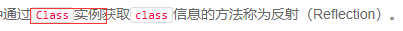
无继承关系的数据类型无法赋值：String s = new Double(123.456); // compile error!
而class是由JVM在执行过程中动态加载的。JVM在第一次读取到一种class类型时，将其加载进内存。
每加载一种class，JVM就为其创建一个Class类型的实例，并关联起来。
以String类为例，当JVM加载String类时，它首先读取String.class文件到内存，然后，为String类创建一个Class实例并关联起来：
Class cls = new Class(String);
这个Class实例是JVM内部创建的，如果我们查看JDK源码，可以发现Class类的构造方法是private，只有JVM能创建Class实例，我们自己的Java程序是无法创建Class实例的。
由于JVM为每个加载的class创建了对应的Class实例，并在实例中保存了该class的所有信息，包括类名、包名、父类、实现的接口、所有方法、字段等，因此，如果获取了某个Class实例，我们就可以通过这个Class实例获取到该实例对应的class的所有信息。
这种通过Class实例获取class信息的方法称为反射（Reflection）。
获取class实例的三种方法：
方法一：直接通过一个class的静态变量class获取：
Class cls = String.class;
方法二：如果我们有一个实例变量，可以通过该实例变量提供的getClass()方法获取：
String s = "Hello";
Class cls = s.getClass();
方法三：如果知道一个class的完整类名，可以通过静态方法Class.forName()获取：
Class cls = Class.forName("java.lang.String");
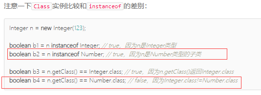
通过Class.newInstance()可以创建类实例，它的局限是：只能调用public的无参数构造方法。
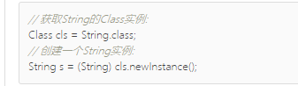
动态加载：程序运行到哪，JVM才会加载相应的类文件到内存。
访问字段：
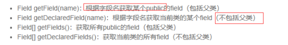
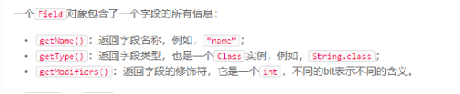
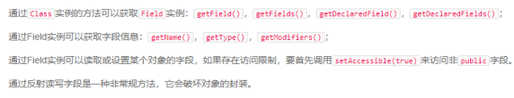
访问方法
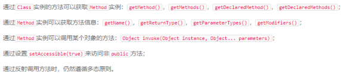
调用构造方法
J
调用父类：H
注解：
定义一个注解时，还可以定义配置参数。配置参数可以包括：
· 所有基本类型；
· String；
· 枚举类型；
· 基本类型、String以及枚举的数组。
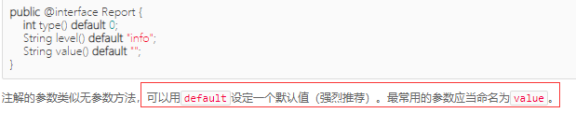
元注解：
· 类或接口：ElementType.TYPE；
· 字段：。；
· 方法：ElementType.METHOD；
· 构造方法：ElementType.CONSTRUCTOR；
· 方法参数：ElementType.PARAMETER。
· 仅编译期：RetentionPolicy.SOURCE；
· 仅class文件：RetentionPolicy.CLASS；
· 运行期：RetentionPolicy.RUNTIME。
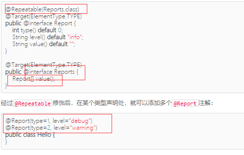
定义annotation：
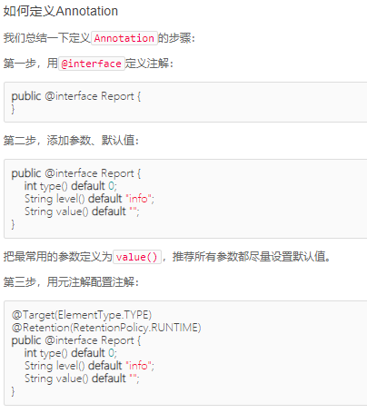
必须设置@Target和@Retention，@Retention一般设置为RUNTIME，因为我们自定义的注解通常要求在运行期读取。一般情况下，不必写@Inherited和@Repeatable。
读取注解：因为注解定义后也是一种class，所有的注解都继承自java.lang.annotation.Annotation，因此，读取注解，需要使用反射API。
使用反射API读取Annotation有两种方法。
方法一是先判断Annotation是否存在，如果存在，就直接读取：
第二种方法是直接读取Annotation，如果Annotation不存在，将返回null：
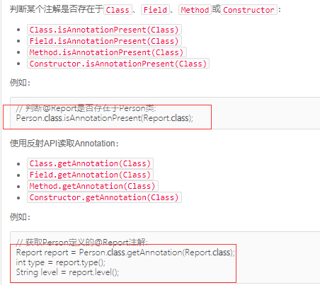
读取方法、字段和构造方法的Annotation和Class类似。但要读取方法参数的Annotation就比较麻烦一点，因为方法参数本身可以看成一个数组，而每个参数又可以定义多个注解，所以，一次获取方法参数的所有注解就必须用一个二维数组来表示。
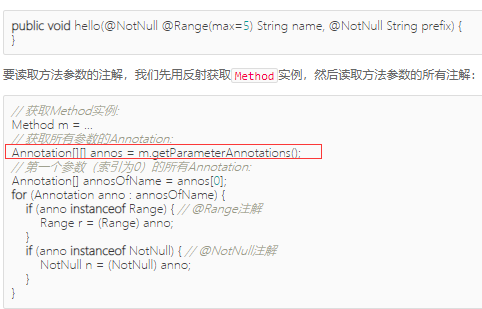
使用注解：
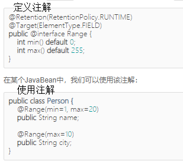
泛型：泛型是一种模板，实现了编写一次，万能匹配，又通过编译器保证了类型安全。是编写模板代码来适应任意类型；
泛型的好处是使用时不必对类型进行强制转换，它通过编译器对类型进行检查；
向上转型：
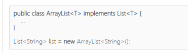
要特别注意：不能把ArrayList<Integer>向上转型为ArrayList<Number>或List<Number>。因为ArrayList<Number>实际上和ArrayList<Integer>是同一个对象，也就是ArrayList<Integer>类型，它不可能接受Float类型， 所以在获取Integer的时候将产生ClassCastException。
ArrayList<Integer>和ArrayList<Number>两者完全没有继承关系。
注意泛型的继承关系：可以把ArrayList<Integer>向上转型为List<Integer>（T不能变！），但不能把ArrayList<Integer>向上转型为ArrayList<Number>（T不能变成父类）。
使用泛型：
编译器看到泛型类型List<Number>就可以自动推断出后面的ArrayList<T>的泛型类型必须是ArrayList<Number>，因此，可以把代码简写为：
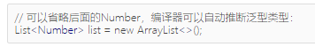
泛型接口：接口也可以使用泛型，实现此接口的类必须实现正确的泛型类型。
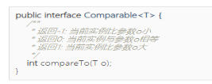
静态方法：
编写泛型类时，要特别注意，泛型类型<T>不能用于静态方法。
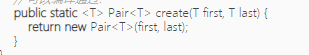
T不能与上面相同，改为K
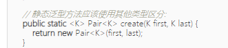
多个泛型类型：
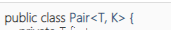
擦拭法：
所谓擦拭法是指，虚拟机对泛型其实一无所知，所有的工作都是编译器做的。导致了
· 编译器把类型<T>视为Object；
· 编译器根据<T>实现安全的强制转型。
Java的泛型是由编译器在编译时实行的，编译器内部永远把所有类型T视为Object处理，但是，在需要转型的时候，编译器会根据T的类型自动为我们实行安全地强制转型。
使用擦拭法的局限性：
1、<T>不能是基本类型，例如int，因为实际类型是Object，Object类型无法持有基本类型：
2、无法取得带泛型的Class。
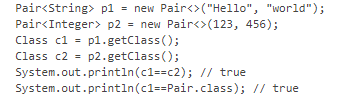
3、所有泛型实例，无论T的类型是什么，getClass()返回同一个Class实例，因为编译后它们全部都是Pair<Object>。
4、不存在带泛型的Class如Pair<String>.class，而是只有唯一的Pair.class。不然会编译错误
5、不能直接（new）实例化T类型：不然会编译错误，要通过反射实例化T（class<T>）
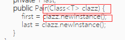
泛型方法要防止重复定义方法，例如：public boolean equals(T obj)；
子类可以获取父类的泛型类型<T>。
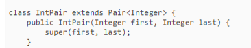
继承通配符：Pair<? extends Number>类型。这种使用<? extends Number>的泛型定义称之为上界通配符（Upper Bounds Wildcards），即把泛型类型T的上界限定在Number了。即Number类及其子类都可以进行匹配。
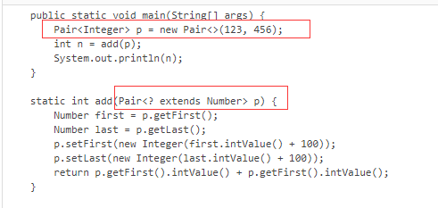
由于add方法是写操作，所以即使实例后的Pair为Integer也不行。
使用类似<? extends Number>通配符作为方法参数时表示：
· 方法内部可以调用获取Number引用的方法，例如：Number n = obj.getFirst();；
· 方法内部无法调用传入Number引用的方法（null除外），例如：obj.setFirst(Number n);。
即一句话总结：使用extends通配符表示可以读，不能写。
使用类似<T extends Number>定义泛型类时表示：
· 泛型类型限定为Number以及Number的子类。
使用类似<? super Integer>通配符作为方法参数时表示：
· 方法内部可以调用传入Integer引用的方法，例如：obj.setFirst(Integer n);；
· 方法内部无法调用获取Integer引用的方法（Object除外），例如：Integer n = obj.getFirst();。
· 即使用super通配符表示只能写不能读。
· 使用extends和super通配符要遵循PECS原则（Producer Extends Consumer Super，生产者是读，消费者是写）。
无限定通配符<?>很少使用（既不能读又不能写只能做一些null判断），
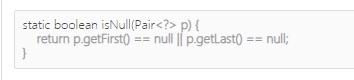
可以用<T>替换，同时它是所有<T>类型的超类（即<?>可以指向<T>）。
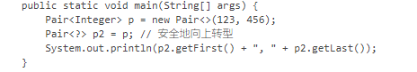
部分反射API是泛型，例如：Class<T>，Constructor<T>；
Class<? super String> sup = String.class.getSuperclass();
//constructor
Class<Integer> clazz = Integer.class;
Constructor<Integer> cons = clazz.getConstructor(int.class);
Integer i = cons.newInstance(123);
可以声明带泛型的数组，但不能直接创建带泛型的数组，必须强制转型；
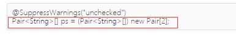
可以通过Array.newInstance(Class<T>, int)创建T[]数组，需要强制转型
多线程：
一个进程可以包含一个或多个线程，但至少会有一个线程。
因为同一个应用程序，既可以有多个进程，也可以有多个线程，因此，实现多任务的方法，有以下几种：多进程模式（每个进程只有一个线程）、多线程模式（一个进程有多个线程）、多进程＋多线程模式（复杂度最高）。
多进程：缺点：创建开销大、进程间通信比线程间慢。优点：一个进程奔溃不会影响别的进程，而一个线程奔溃可能影响别的线程从而影响整个进程。
多线程：
一个Java程序实际上是一个JVM进程，JVM进程用一个主线程来执行main()方法，在main()方法内部，我们又可以启动多个线程。此外，JVM还有负责垃圾回收的其他工作线程等。
与单线程相比：多线程经常需要读写共享数据，并且需要同步。例如，播放电影时，就必须由一个线程播放视频，另一个线程播放音频，两个线程需要协调运行，否则画面和声音就不同步。因此，多线程编程的复杂度高，调试更困难。
特点：多线程模型是Java程序最基本的并发模型；/后续读写网络、数据库、Web开发等都依赖Java多线程模型。
Java用Thread对象表示一个线程，通过调用start()启动一个新线程；
一个线程对象只能调用一次start()方法；
线程调用start()方法后就执行run（）执行代码写在run()方法中；
线程调度由操作系统决定，程序本身无法决定调度顺序；
Thread.sleep()可以把当前线程暂停一段时间。
线程的状态
Java线程对象Thread的状态包括：New、（Runnable、Blocked、Waiting、Timed Waiting（这几个状态可以相互替换））和Terminated；
通过对另一个线程对象调用join()方法可以等待其执行结束；
可以指定等待时间，超过等待时间线程仍然没有结束就不再等待；
对已经运行结束的线程调用join()方法会立刻返回。
中断线程的方法：
1、目标线程不断检测是否是interrupt状态，对目标线程调用interrupt（）方法，目标线程就能检测到interrupt状态，从而实现中断
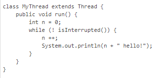
如果目标线程处于等待状态，该线程调用interrupt（），该线程会捕获到InterruptedException；
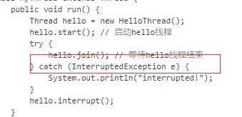
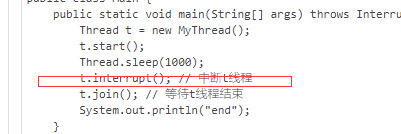
2、设置标志位也可中断，volatile关键字解决了共享变量在线程间的可见性问题。
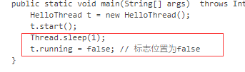
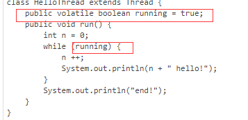
守护线程：所有非守护线程都执行完毕后，无论有没有守护线程，虚拟机都会自动退出。如果非守护线程未执行完，jvm就会等待执行完，而守护线程就不用等待。其可以实现时钟时间功能。
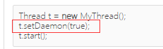
线程同步：
多线程同时读写共享变量时，线程的调度由操作系统决定，会造成逻辑错误，因此需要通过synchronized同步；
同步的本质就是给指定对象加锁，加锁后才能继续执行后续代码；
注意加锁对象必须是同一个实例；
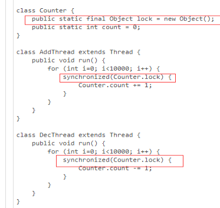
对JVM定义的单个原子操作不需要同步。
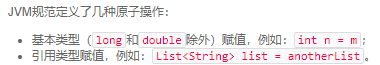
同步方法：
用synchronized修饰方法可以把整个方法变为同步代码块，synchronized方法加锁对象是this；
通过合理的设计和数据封装可以让一个类变为“线程安全”；
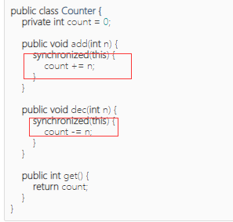
一个类没有特殊说明，默认不是thread-safe；
多线程能否安全访问某个非线程安全的实例，需要具体问题具体分析。
当我们锁住的是this实例时，实际上可以用synchronized修饰这个方法。下面两种写法是等价的：
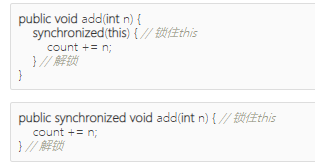
静态方法添加synchronized修饰符，它锁住的是Class实例
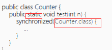
死锁：
能够被同一个线程重复获取的锁成为可重入锁
一个线程可以获取一个锁后，再继续获取另一个锁，在获取多个锁的时候，不同线程获取多个不同对象的锁可能导致死锁。死锁产生的条件是多线程各自持有不同的锁，并互相试图获取对方已持有的锁，导致无限等待；例如线程a获取锁1，线程b获取锁2，没结束，线程a又想获取锁2，被线程b占用，线程b想获取锁1，被线程a占用导致死锁
避免死锁：几个线程获取锁的顺序要一致
synchronized解决了多线程竞争的问题。并没有解决多线程协调的问题。
wait和notify用于多线程协调运行：
当一个线程在this.wait()等待时，它就会释放this锁，从而使得其他线程能够在addTask()方法获得this锁。
· 在synchronized内部可以调用wait()使线程进入等待状态；
· 必须在已获得的锁对象上调用wait()方法；
· 在synchronized内部可以调用notify()或notifyAll()唤醒其他等待线程；
· 必须在已获得的锁对象上调用notify()或notifyAll()方法；
· 已唤醒的线程还需要重新获得锁后才能继续执行。
ReentrantLock:
ReentrantLock可以替代synchronized进行同步；
ReentrantLock获取锁更安全；
必须先获取到锁，再进入try {...}代码块，最后使用finally保证释放锁；
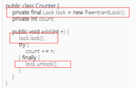
可以使用tryLock()尝试获取锁。
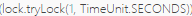
如果1秒后仍未获取到锁，tryLock()返回false，可使用Condition对象来实现ReentrantLock的wait和notify的功能。Condition对象必须从Lock对象获取
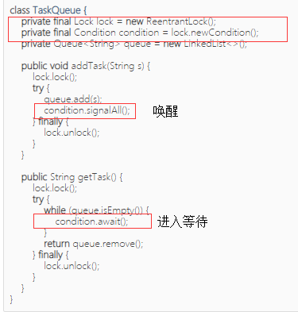
只允许一个线程写入（其他线程既不能写入也不能读取）；没有写入时，多个线程允许同时读（提高性能）。
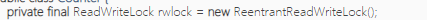
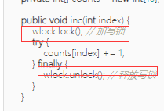
ReadWriteLock适合读多写少的场景。
StampedLock和ReadWriteLock相比，写入的加锁是完全一样的，不同的是读取（即读的时候能写，是一种乐观锁）。
StampedLock是不可重入锁。
悲观锁：总是假设最坏的情况，每次去拿数据的时候都认为别人会修改，所以每次在拿数据的时候都会上锁，这样别人想拿这个数据就会阻塞直到它拿到锁（共享资源每次只给一个线程使用，其它线程阻塞，用完后再把资源转让给其它线程）。Java中synchronized和ReentrantLock等独占锁就是悲观锁思想的实现。
乐观锁：总是假设最好的情况，每次去拿数据的时候都认为别人不会修改，所以不会上锁，但是在更新的时候会判断一下在此期间别人有没有去更新这个数据，乐观锁适用于多读的应用类型，这样可以提高吞吐量，在Java中java.util.concurrent.atomic包下面的原子变量类就是使用了乐观锁的一种实现方式CAS实现的。
Concurrent集合
使用java.util.concurrent包提供的线程安全的并发集合可以大大简化多线程编程：
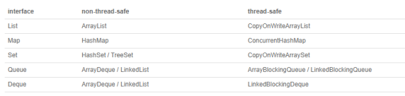
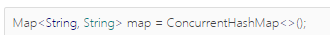
多线程同时读写并发集合是安全的；
尽量使用Java标准库提供的并发集合，避免自己编写同步代码。
Atomic类是通过无锁（lock-free）的方式实现的线程安全（thread-safe）访问
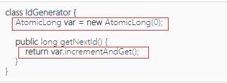
· 原子操作实现了无锁的线程安全；
· 适用于计数器，累加器等。
线程池：
线程池内部维护了若干个线程，没有任务的时候，这些线程都处于等待状态。如果有新任务，就分配一个空闲线程执行。如果所有线程都处于忙碌状态，新任务要么放入队列等待，要么增加一个新线程进行处理。
· FixedThreadPool：线程数固定的线程池；
· CachedThreadPool：线程数根据任务动态调整的线程池；
· SingleThreadExecutor：仅单线程执行的线程池。
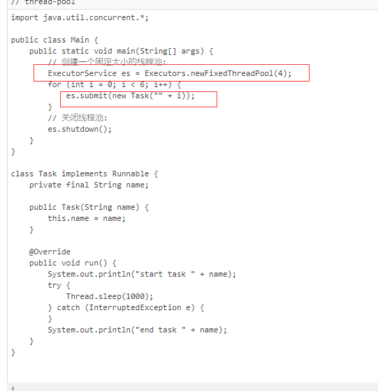
还有一种任务，需要定期反复执行，就使用调度线程池。
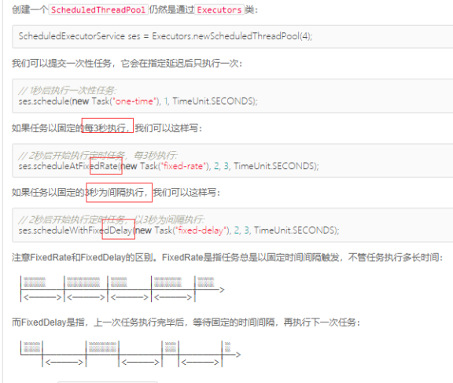
Java标准库还提供了一个Callable接口，和Runnable接口比，它多了一个返回值：
为了获取异步执行结果使用future
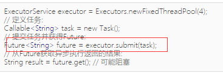
任务完成后获取结果，即未来（异步）得到结果。
Fork/Join是一种基于“分治”的算法：通过分解任务，并行执行，最后合并结果得到最终结果。
ForkJoinPool线程池可以把一个大任务分拆成小任务并行执行，任务类必须继承自RecursiveTask或RecursiveAction。
使用Fork/Join模式可以进行并行计算以提高效率。
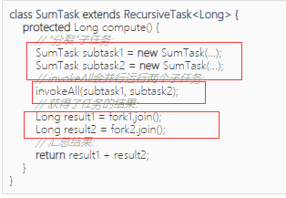
笔误
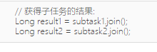
ThreadLocal表示线程的“局部变量”，它确保每个线程的ThreadLocal变量都是各自独立的；
ThreadLocal适合在一个线程的处理流程中保持上下文（避免了同一参数在所有方法中传递）；
使用ThreadLocal要用try ... finally结构，并在finally中清除。
UserContext中完全封装了ThreadLocal
网络编程：
网关：负责连接多个网络，并在多个网络之间转发数据的计算机，通常是路由器或交换机；
IP地址：计算机的网络接口（通常是网卡）在网络中的唯一标识；
Socket：
每个应用程序需要各自对应到不同的Socket，数据包才能根据Socket正确地发到对应的应用程序。
一个Socket就是由IP地址和端口号（范围是0～65535）组成,端口号有操作系统分配，小于1024的端口属于特权端口，需要管理员权限，大于1024的端口可以由任意用户的应用程序打开。
使用Socket进行网络编程时，本质上就是两个进程之间的网络通信。其中一个进程必须充当服务器端，它会主动监听某个指定的端口，另一个进程必须充当客户端，它必须主动连接服务器的IP地址和指定端口，如果连接成功，服务器端和客户端就成功地建立了一个TCP连接，双方后续就可以随时发送和接收数据。
· 对服务器端来说，它的Socket是指定的IP地址和指定的端口号；
· 对客户端来说，它的Socket是它所在计算机的IP地址和一个由操作系统分配的随机端口号。
客户端上使用
1.getInputStream方法可以得到一个输入流，客户端的Socket对象上的getInputStream方法得到输入流其实就是从服务器端发回的数据。
2.getOutputStream方法得到的是一个输出流，客户端的Socket对象上的getOutputStream方法得到的输出流其实就是发送给服务器端的数据。
服务器端上的使用
1.getInputStream方法得到的是一个输入流，服务端的Socket对象上的getInputStream方法得到的输入流其实就是从客户端发送给服务器端的数据流。
2.getOutputStream方法得到的是一个输出流，服务端的Socket对象上的getOutputStream方法得到的输出流其实就是发送给客户端的数据。
· 服务器端用ServerSocket监听指定端口；
· 客户端使用Socket(InetAddress, port)连接服务器；
· 服务器端用accept()接收连接并返回Socket；
· 双方通过Socket打开InputStream/OutputStream读写数据；
· 服务器端通常使用多线程同时处理多个客户端连接，利用线程池可大幅提升效率；
· flush()用于强制输出缓冲区到网络。
UDP：
和TCP编程相比，UDP编程就简单得多，因为UDP没有创建连接，数据包也是一次收发一个，所以没有流的概念。
· 服务器端用DatagramSocket(port)监听端口；
· 客户端使用DatagramSocket.connect()指定远程地址和端口；
· 双方通过receive()和send()读写数据；
· DatagramSocket没有IO流接口，数据被直接写入byte[]缓冲区。
HTTP编程：
· 1xx：表示一个提示性响应，例如101表示将切换协议，常见于WebSocket连接；
· 2xx：表示一个成功的响应，例如200表示成功，206表示只发送了部分内容；
· 3xx：表示一个重定向的响应，例如301表示永久重定向，303表示客户端应该按指定路径重新发送请求；
· 4xx：表示一个因为客户端问题导致的错误响应，例如400表示因为Content-Type等各种原因导致的无效请求，404表示指定的路径不存在；
· 5xx：表示一个因为服务器问题导致的错误响应，例如500表示服务器内部故障，503表示服务器暂时无法响应。
·
RMI远程调用：
IO：
InputStream并不是一个接口，而是一个抽象类，它是所有输入流的超类。这个抽象类定义的一个最重要的方法就是int read()，签名如下：
public abstract int read() throws IOException;
这个方法会读取输入流的下一个字节，并返回字节表示的int值（0~255）。如果已读到末尾，返回-1表示不能继续读取了。
缓冲：很多流支持一次性读取多个字节到缓冲区，对于文件和网络流来说，利用缓冲区一次性读取多个字节效率往往要高很多。InputStream提供了两个重载方法来支持读取多个字节：
· int read(byte[] b)：读取若干字节并填充到byte[]数组，返回读取的字节数
· int read(byte[] b, int off, int len)：指定byte[]数组的偏移量和最大填充数
在调用InputStream的read()方法读取数据时，我们说read()方法是阻塞（Blocking）的。即必须等待read（）返回才能执行下一行代码
OutputStream的write()方法也会阻塞
OutputStream：
OutputStream还提供了一个flush()方法，它的目的是将缓冲区的内容真正输出到目的地。，能强制把缓冲区内容输出
通常情况下，我们不需要调用这个flush()方法，因为缓冲区写满了OutputStream会自动调用它，并且，在调用close()方法关闭OutputStream之前，也会自动调用flush()方法。编写聊天软件时，发送一句话但缓冲区没满可以直接调用flush()方法将这句话发送出去，而不是等待写了好多句话等缓冲区满后一起发送给接收方。
InputStream分为两大类
一类是直接提供数据的基础InputStream，例如：
· FileInputStream
· ByteArrayInputStream
· ServletInputStream
一类是提供额外附加功能的InputStream，例如：
· BufferedInputStream
· DigestInputStream
· CipherInputStream
Java的IO标准库使用Filter模式为InputStream和OutputStream增加功能：
· 可以把一个InputStream和任意个FilterInputStream组合；
· 可以把一个OutputStream和任意个FilterOutputStream组合。
Filter模式可以在运行期动态增加功能（又称Decorator模式）。
读取classpath文件：
Class对象的getResourceAsStream()可以从classpath中读取指定资源；
根据classpath读取资源时，需要检查返回的InputStream是否为null。
序列化：
序列化是指把一个Java对象变成二进制内容，本质上就是一个byte[]数组。
反序列化就是将二进制内容变成Java对象
一个Java对象要能序列化，必须实现一个特殊的java.io.Serializable接口，它的定义如下：
public interface Serializable {
}
readObject()可能抛出的异常有：
· ClassNotFoundException：没有找到对应的Class；
· InvalidClassException：Class不匹配。（找不到对应的字段）
为了避免这种class定义变动导致的不兼容，Java的序列化允许class定义一个特殊的serialVersionUID静态变量，
反序列化时不调用构造方法，可设置serialVersionUID作为版本号（非必需）
public class Person implements Serializable {
private static final long serialVersionUID = 2709425275741743919L;
}
更好的序列化方法是通过JSON这样的通用数据结构来实现
Reader：
Reader定义了所有字符输入流的超类：
与inputStream不同的是，read是字符流，inputStream是字节流
为了避免乱码
CharArrayReader可以在内存中模拟一个Reader，它的作用实际上是把一个char[]数组变成一个Reader，这和ByteArrayInputStream非常类似：
try (Reader reader = new CharArrayReader("Hello".toCharArray())) {
}
StringReader可以直接把String作为数据源，它和CharArrayReader几乎一样：
try (Reader reader = new StringReader("Hello")) {
}
除了特殊的CharArrayReader和StringReader，普通的Reader实际上是基于InputStream构造的，因为Reader需要从InputStream中读入字节流（byte），然后，根据编码设置，再转换为char就可以实现字符流。如果我们查看FileReader的源码，它在内部实际上持有一个FileInputStream。
将字节流转成字符流
使用InputStreamReader，可以把一个InputStream转换成一个Reader。
Writer:
与reader类似
PrintStream是一种FilterOutputStream，它在OutputStream的接口上实现的，额外提供了一些写入各种数据类型的方法
PrintStream最终输出的总是byte数据，而PrintWriter则是扩展了Writer接口，它的print()/println()方法最终输出的是char数据。两者的使用方法几乎是一模一样的：